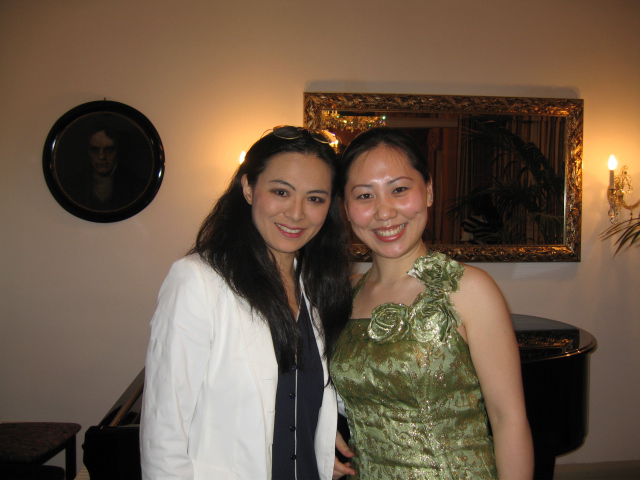

桔子树优秀声乐培训教师许杨授课范围：少儿声乐、美声唱法、民族唱法、
通俗唱法、音乐基础等。
1989年6岁考入北京市少年宫独唱班学习童声唱法
1990年参加全国迎亚运少儿歌唱比赛获得二等奖
1995年考入中国交响乐团附属少年及女子合唱团并随团进行多次演出
2001年考入维也纳国立音乐与艺术大学 声乐专业 本硕连读
2010年加入维也纳国家歌剧院合唱团
在维也纳留学期间，曾多次参加大使馆组织的各项文艺活动，并受到大使接见；多次在奥地利、意大利、捷克等国家歌剧院进行演出；曾多次参加欧洲各国声乐比赛并获得优秀表演等奖项。
